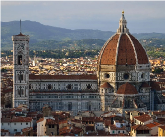
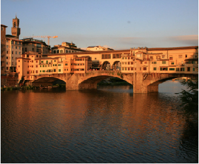
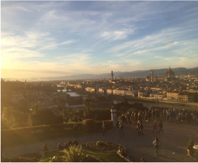

Explore: Florence
Explore: Florence
Brunelleschi’s dome

- Third largest cathedral in the world.
- The only way to see the view from atop is to climb 463 steps.
Ponte Vecchio

- One of the few surviving bridges of WWII.
- To recoup money from its construction, shops were rented out
and still are today. (Mostly by jewelers).
Piazzale Michelangelo

- Beautiful and scenic view of Florence.
- Steps allow for drinking and socializing.
*For bonus content on Brunelleschi's dome click here*